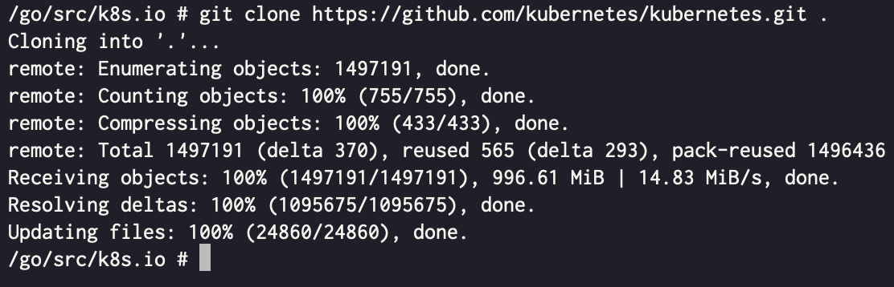

적고 보니 글이 좀 기네요. 마음의 평정심을 갖고 차근차근 해봅시다.
Pain point - 왜 이런짓을?
- 기본적으로 Kubeadm 은 CA 인증서는 10년, CA-signed 인증서는 1년 뒤에 만료되도록 설정하여 인증서를 발급한다.
- 그 이유는
- 주기적으로 인증서를 재발급하도록 하여 보안 강화
- CA-Signed 인증서 만료기간을 1년 이상으로 하는 것은 Security Issue 를 야기할 수 있다고 여기 에서 그랬다.
- 주기적으로 클러스터 버전을 업그레이드 하도록 유도
- Kubeadm 은 클러스터 버전 업그레이드 시에 인증서도 재발급하는 정책으로 클러스터 관리자들이 주기적으로 버전을 업그레이드 하여 클러스터 버전을 최신으로 유지시키고 동시에 보안성도 강화 하도록 유도하더라.
- 주기적으로 인증서를 재발급하도록 하여 보안 강화
- 하지만 이것은 폐쇄망 환경일 때 오히려 방해가 되기도 한다.
- 높은 보안 수준을 위해 폐쇄망으로 클러스터를 구축했기에 오히려 인증서 재발급을 통한 보안 강화는 굳이? 의 느낌을 준다.
- 폐쇄망 환경을 요구하는 보안이 중요한 곳에서는 소프트웨어 보안 심사 등을 버전마다 받는 것이 힘들기 때문에 그냥 한 버전으로 고정시켜 놓기도 한다.
- 또한 폐쇄망에서 클러스터 버전을 업그레이드 하는 것은 생각보다 고되다.
.deb등의 패키지 파일, 컨테이너 이미지 파일 등을 전부 다운받아 폐쇄망 환경으로 갖고 들어가 작업해야 하기 때문.
- 또한 폐쇄망에서 클러스터 버전을 업그레이드 하는 것은 생각보다 고되다.
- 따라서 나는 이 클러스터를 적어도 내가 살아 있는 한 인증서가 만료되지 않게 하려고 한다.
Kubeadm 인증서 분석
- 쿠버네티스 Control plane 이 사용하는 인증서에 대한 것은 컨트롤 플레인 인증서 톺아보기 문서를 확인하자.
- 요약하면 클러스터가 생성될 때
ca,etcd-ca,front-proxy-ca가 생성되고 이것들을 이용해 각 Control plane 구성요소들이 사용할 인증서들이 생성되게 된다. - 따라서 기간을 임의로 바꿀 때에도 동일한 순서로 가면 된다
- 즉,
ca,etcd-ca,front-proxy-ca를 먼저 생성한 후에, 이것들을 이용해 각 Control plane 구성요소들이 사용할 인증서를 생성하면 된다
- 즉,
Step 1. CA 인증서 생성하기
- 솔직히 CA 인증서 생성하는 것은 Configuration file 만 있으면 명령어 한줄로 끝난다
ca 인증서 생성하기
TL;DR!
ca.conf파일
[req]
distinguished_name = cert_dn
x509_extensions = v3_req
prompt = no
[cert_dn]
CN = kubernetes
[v3_req]
keyUsage = critical, digitalSignature, keyEncipherment, keyCertSign
basicConstraints = critical, CA:TRUE
subjectKeyIdentifier = hash
subjectAltName = @alt_names
[alt_names]
DNS.0 = kubernetes
ca.conf로 200년짜리 (73000) 인증서 생성
openssl req -x509 -new -nodes -newkey rsa:2048 -keyout ca.key -out ca.crt -config ca.conf -days 73000 -set_serial 0그래도 왜 이래 되는지 한번 보고 가야겠지?
- 일단
ca인증서를 openssl 로 한번 확인해보자
openssl x509 -in /etc/kubernetes/pki/ca.crt -text -noout- 그럼 아래와 같은 결과가 나온다
Certificate:
Data:
Version: 3 (0x2)
Serial Number: 0 (0x0)
Signature Algorithm: sha256WithRSAEncryption
Issuer: CN = kubernetes
Validity
Not Before: Jan 00 00:00:00 0000 GMT
Not After : Jan 00 00:00:00 0000 GMT
Subject: CN = kubernetes
Subject Public Key Info:
Public Key Algorithm: rsaEncryption
RSA Public-Key: (2048 bit)
Modulus:
### 뭔가 심오한 알파벳들 ###
Exponent: 65537 (0x10001)
X509v3 extensions:
X509v3 Key Usage: critical
Digital Signature, Key Encipherment, Certificate Sign
X509v3 Basic Constraints: critical
CA:TRUE
X509v3 Subject Key Identifier:
### 뭔가 심오한 알파벳들 ###
X509v3 Subject Alternative Name:
DNS:kubernetes
Signature Algorithm: sha256WithRSAEncryption
### 뭔심알 ###
- 물론 위 항목들을 모조리 파헤치며 알아보면 좋겠지만, 몇가지만 살펴 보며 이 항목들이 어떻게 TL;DR 에 반영되었는지 살펴보자.
- 4 번째 줄 -
Serial Number: 0 (0x0)- 인증서의 시리얼 번호 를 0으로 설정한다는 뜻이다.
openssl명령어의-set_serial 0옵션을 통해 설정할 수 있다.
- 6 번째 줄 -
Issuer: CN = kubernetes- 인증서를 발급해준 기관의 CN.
- 이것은 별도로 설정하지 않았다.
- 인증서 생성시 서명할 CA 인증서를 지정하지 않으면, 스스로 서명한 (Self-signed) 인증서가 생성되기 때문.
- 즉, 여기서의
Issuer는 아래Subject항목과 동일한 주체이다.
- 10 번째 줄 -
Subject: CN = kubernetes- 인증서 자체에 대한 CN.
- 이것은
ca.conf파일의CN = kubernetes항목을 통해 설정할 수 있다.
- 13 번째 줄 -
RSA Public-Key: (2048 bit)- 인증서 생성시, 2048 bit 의 RSA 키쌍을 사용한다는 뜻이다.
openssl명령어의-newkey rsa:2048옵션을 통해 설정할 수 있다.
- 18 번째 줄 -
X509v3 Key Usage: critical, 19 번째 줄 -Digital Signature, Key Encipherment, Certificate Sign- 인증서의 Key Usage 를 명시하는 부분인데, 주목할 것은 지금 우리가 생성하는 인증서가 CA 이기 때문에 저 Certificate Sign 이 반드시 포함되어야 한다는 것이다.
- 이것은
ca.conf파일의keyUsage = critical, digitalSignature, keyEncipherment, keyCertSign를 통해 설정할 수 있다.
- 20 번째 줄 -
X509v3 Basic Constraints: critical, 21 번째 줄 -CA:TRUE- 인증서의 Basic Constraints 를 명시하는 부분인데, 당연히 CA 인증서이기 때문에
CA:TRUE로 설정되어 있어야 한다. - 이것은
ca.conf파일의basicConstraints = critical, CA:TRUE부분을 통해 명시할 수 있다.
- 인증서의 Basic Constraints 를 명시하는 부분인데, 당연히 CA 인증서이기 때문에
- 22 번째 줄 -
X509v3 Subject Key Identifier- 인증서의 SKID 를 명시하는 부분이다.
- 이것은
ca.conf파일의subjectKeyIdentifier = hash항목을 통해 설정할 수 있다.
- 24 번째 줄 -
X509v3 Subject Alternative Name:, 25 번째 줄 -DNS:kubernetes- 인증서에 대한 SAN.
- 이것은
ca.conf파일의DNS.0 = kubernetes항목을 통해 설정할 수 있다.
- 4 번째 줄 -
etcd-ca 인증서 생성하기
ca인증서 생성할때처럼 추적해보면 아래와 같은 TL;DR 이 될 거시여
TL;DR
etcd-ca.conf파일
[req]
distinguished_name = cert_dn
x509_extensions = v3_req
prompt = no
[cert_dn]
CN = etcd-ca
[v3_req]
keyUsage = critical, digitalSignature, keyEncipherment, keyCertSign
basicConstraints = critical, CA:TRUE
subjectKeyIdentifier = hash
subjectAltName = @alt_names
[alt_names]
DNS.0 = etcd-ca
etcd-ca.conf로 200년짜리 (73000) 인증서 생성
openssl req -x509 -new -nodes -newkey rsa:2048 -keyout etcd-ca.key -out etcd-ca.crt -config etcd-ca.conf -days 73000 -set_serial 0front-proxy-ca 인증서 생성하기
- 마찬가지로,
TL;DR
front-proxy-ca.conf파일
[req]
distinguished_name = cert_dn
x509_extensions = v3_req
prompt = no
[cert_dn]
CN = front-proxy-ca
[v3_req]
keyUsage = critical, digitalSignature, keyEncipherment, keyCertSign
basicConstraints = critical, CA:TRUE
subjectKeyIdentifier = hash
subjectAltName = @alt_names
[alt_names]
DNS.0 = front-proxy-ca
front-proxy-ca.conf로 200년짜리 (73000) 인증서 생성
openssl req -x509 -new -nodes -newkey rsa:2048 -keyout front-proxy-ca.key -out front-proxy-ca.crt -config front-proxy-ca.conf -days 73000 -set_serial 0- 여기까지 하면 필요한 CA 인증서들이 모두 생성된다.
Step 2. CA-Signed 인증서 생성 (준비) 하기
- CA-Signed 인증서를 위와 같은 방법으로
openssl을 이용해 분석해서 생성할 수도 있지만, 파일 갯수가 많아도 너무 많아서 귀찮다. - 그래서 Kubeadm 코드를 변경하고 직접 빌드해서 원큐에 해결하는 방법을 사용해 보자.
지피지기 백전백승: 원본 코드에는 어떻게 돼있나?
- 뭐 인자 혹은 환경변수로 기간을 주입해 줄 수 있다면 정말 좋겠지만, 안타깝게도 원본 코드에는 1년이 하드코딩으로 박혀 있다.
// CertificateValidity defines the validity for all the signed certificates generated by kubeadm
CertificateValidity = time.Hour * 24 * 365github://kubernetes/kubernetes/cmd/kubeadm/app/constants/constants.go
- 그래서 저부분을 바꾸고 새로 빌드하면 될 것 같다는 생각이 든다.
Kubeadm 버전 확인
- Kubeadm 버전에 맞는 개발환경을 구성하기 위해, Kubeadm 버전을 확인해 본다.
kubeadm versionkubeadm version: &version.Info{Major:"1", Minor:"24", GitVersion:"v1.24.15", GitCommit:"2c67202dc0bb96a7a837cbfb8d72e1f34dfc2808", GitTreeState:"clean", BuildDate:"2023-06-14T09:54:33Z", GoVersion:"go1.19.10", Compiler:"gc", Platform:"linux/amd64"}
- 그럼 이제 여기에 맞는 개발환경을 구성해 보자.
개발환경 구성하기
- Go 설치하고 뭐하고 뭐하고 하는 것은 너무 번거롭고, 로컬 환경의 영향을 너무 많이 받는다.
- 그래서 Docker (+ Docker compose) 를 이용해 간단하게 개발환경을 구성해보자.
Dockerfile은 아래처럼 작성하면 된다:
ARG GOVERSION=1.19.10
FROM golang:${GOVERSION}-alpine
RUN apk update \
&& apk add gcc musl-dev vim git \
&& rm -rf /var/cache/apk
ENV GOPATH=/go
WORKDIR ${GOPATH}/src/k8s.io- 간단하게 설명하자면,
- 또한
docker-compose.yaml는 다음과 같이 적어주면 된다:
services:
go-devel:
image: go-devel
build:
context: .
dockerfile: Dockerfile
platform: linux/amd64
command: sh
volumes:
- .:/mnt/out
restart: 'no'- 이것도 간단하게 설명하면,
- 빌드한 결과를 컨테이너 밖으로 빼내기 위해
volumes를 이용해 현재 디렉토리를 컨테이너 안의/mnt/out에 마운트 한다. platform옵션은 여기 에서 확인한Platform값을 사용하면 된다.
- 빌드한 결과를 컨테이너 밖으로 빼내기 위해
- 그럼 이제 진짜 개발환경으로 진입해 보자.
docker compose run --rm -it go-devel
- 그 다음, Kubernetes 소스 코드를 클론받는다.
git clone https://github.com/kubernetes/kubernetes.git .
- 이전의 Kubeadm 버전을 사용하기 위해, 여기 에서 확인한
GitCommit값인2c67202dc0bb96a7a837cbfb8d72e1f34dfc2808으로 되돌아 간다.
git reset --hard 2c67202dc0bb96a7a837cbfb8d72e1f34dfc2808
vim으로 파일을 열어서 수정해 준다.
// vim ./cmd/kubeadm/app/constants/constants.go
// CertificateValidity = time.Hour * 24 * 365
CertificateValidity = time.Hour * 24 * 365 * 199아래의 명령어로
vim말고sed로 수정해줘도 됩니다.sed -ri 's|(.*)CertificateValidity = time.Hour * 24 * 365(.*)|\1CertificateValidity = time.Hour * 24 * 365 * 199\2|g' ./cmd/kubeadm/app/constants/constants.go
- 그 다음 빌드
go build ./cmd/kubeadm/kubeadm.go- 빌드가 완료됐으면, 바이너리를 마운트된 경로로 이동 (+헷갈리지 않기 위해 이름도 바꿔주자) 한다.
mv ./kubeadm /mnt/out/kubeadm-custom- 여기까지 왔으면, 필요한 파일들은 모두 준비된 것이다.
Step 3. 인증서 적용하기
Control Plane 노드의 설정을 변경하는 것이기에, 중요 데이터는 미리 백업해 두어야 합니다.
만일 고가용성을 위해 Control Plane 노드를 여러개로 구성했다면, tmux 의 터미널 동시입력 기능 등을 이용해 모든 노드에서 동시에 CA 인증서가 변경될 수 있도록 해주세요.
- 생성한 인증서를 각 위치에 복사해 준다.
sudo cp ca.* /etc/kubernetes/pki
sudo cp front-proxy-ca.* /etc/kubernetes/pki
sudo cp etcd-ca.crt /etc/kubernetes/pki/etcd/ca.crt
sudo cp etcd-ca.key /etc/kubernetes/pki/etcd/ca.key- 생성한 커스텀 Kubeadm 으로 CA-Signed 인증서들을 생성해 준다.
sudo ./kubeadm-custrom certs renew all- 이후에는 controlplane component 들을 재시작해준다.
#draft 설명 추가!
Step 4. Kubelet 설정하기
#draft 설명 추가!
- 위의 과정이 끝나면,
kube-apiserver,etcd,kube-controller-manager등의 component 들은 다 살아날 것이다. - 근데 각 node 의 kubelet 이 먹통이 된다.
- 이것은 kubelet 이 사용하는 인증서의 CA 와 새로 생성한 CA 가 (당연히) 다르기 때문.
- 따라서 각 노드를 클러스터에서 제외했다가 새로 합류하거나,
- 혹은 아래의 방법으로 Kubelet 이 사용할 인증서를 새로 발급해 주면 된다.
- 아래의 방법에는 새로 발급한 CA 인증서가 필요하니, 이 인증서를
rsync같은 걸로 복사해 와서 발급하면 된다.
- 아래의 방법에는 새로 발급한 CA 인증서가 필요하니, 이 인증서를
#!/bin/bash
# Create CSR (Certificate Signing Request) config file
cat << EOF > kubelet-client.cnf
[req]
distinguished_name = cert_dn
x509_extensions = v3_req
prompt = no
[cert_dn]
CN = system:node:$(hostname)
O = system:nodes
[v3_req]
keyUsage = critical, digitalSignature, keyEncipherment
extendedKeyUsage = clientAuth
basicConstraints = critical, CA:FALSE
subjectKeyIdentifier = hash
EOF
# Create cert and sign w/ ca cert
openssl req -new -nodes -newkey rsa:2048 -keyout kubelet-client.key -out kubelet-client.csr -config kubelet-client.cnf
sudo openssl x509 -req -in kubelet-client.csr -extensions v3_req -extfile kubelet-client.cnf -CA /etc/kubernetes/pki/ca.crt -CAkey /etc/kubernetes/pki/ca.key -CAcreateserial -out kubelet-client.crt -days 36500 -sha256
cat kubelet-client.crt kubelet-client.key > kubelet-client-$(date +%Y-%m-%d-%H-%M-%S).pem